The rapid adoption of electric vehicles worldwide is creating an unprecedented opportunity to revolutionize energy storage through the repurposing of retired EV batteries. As these batteries reach the end of their automotive service life, they retain substantial capacity that makes them ideal candidates for Battery Energy Storage Systems (BESS), creating a circular economy that benefits both environmental sustainability and economic efficiency.
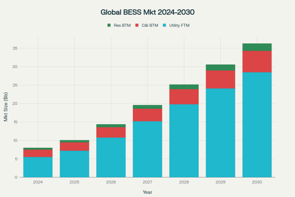
The Growing Market Landscape
The global Battery Energy Storage System market is experiencing explosive growth, projected to expand from approximately $8-10 billion in 2024 to between $25.6-86.87 billion by 2030. This represents a compound annual growth rate (CAGR) of 26.9% to 27.1%, driven by increasing renewable energy integration, grid modernization initiatives, and declining battery costs.
Utility-scale installations dominate the market, accounting for up to 90% of total capacity by 2030, with forecasted annual installations reaching 450-620 GWh. The commercial and industrial segment is expected to grow at 13% CAGR, reaching 52-70 GWh in annual additions, while residential installations are projected to reach approximately 20 GWh by 2030.
Understanding Second-Life Battery Potential
When electric vehicle batteries reach their "end-of-life" threshold—typically defined as 80% of original capacity—they still retain 70-80% of their energy storage capability. This substantial remaining capacity makes them highly suitable for stationary energy storage applications where the demanding power and energy density requirements of vehicle propulsion are no longer necessary.
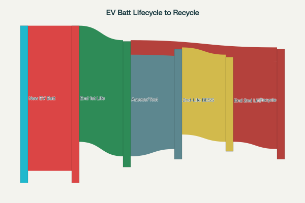
Recent studies demonstrate that most EV batteries retain more than 80% of their capacity even after 200,000 kilometers of use, challenging earlier pessimistic assumptions about battery degradation. The P3 Group's comprehensive analysis of over 7,000 vehicles revealed that capacity loss occurs gradually, with batteries following a predictable three-phase lifecycle: End-of-Warranty (EoW), End-of-First-Life (EoFL), and End-of-Second-Life (EoSL).
Economic Advantages and Cost Dynamics
Second-life batteries offer compelling economic benefits, with costs 50-70% lower than new batteries and the potential to reduce BESS cost-per-kWh by as much as 60% while cutting capital expenditure costs to half of competitive solutions. McKinsey research indicates that by 2025, second-life batteries may be 30-70% less expensive than new batteries in suitable applications.
The economic case becomes even stronger when considering the multiplicative effects of low-cost modules, which reduce inventory costs, warranty expenses, and other system integrator cost structures. As of late 2023, first-life LFP modules cost $90-120 per kWh, while retired batteries typically sold for $0-60 per kWh.
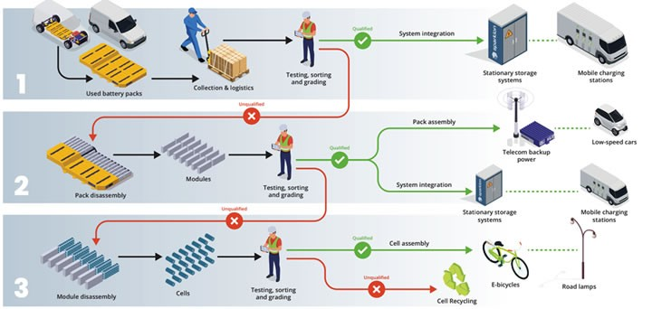
The emerging circular economy for EV batteries is expected to add $11-40 billion to the global economy as the industry matures. This economic growth encompasses both direct recycling activities and the extended value creation through second-life applications.
Key Applications and Market Segments
Grid-Scale Energy Storage
For grid stabilization, end-of-first-life EV batteries are repurposed and aggregated into large-scale sustainable energy storage solutions. These systems provide crucial grid services including:
- Frequency regulation: BESS can respond in milliseconds to correct frequency deviations, providing bidirectional power control to absorb excess power during high frequency events and inject power during supply shortfalls
- Peak shaving: Storing energy during off-peak hours and discharging during high-demand periods
- Renewable energy integration: Smoothing intermittency from solar and wind power sources
- Grid stability services: Providing reserve capacity and voltage support
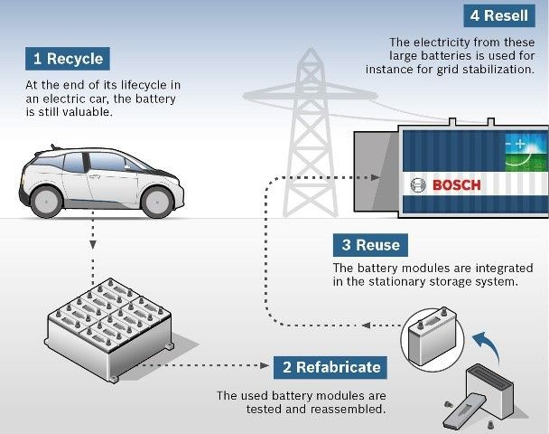
Commercial and Industrial Applications
The commercial and industrial segment represents significant growth opportunities, with applications including:
- Electric vehicle charging infrastructure: BESS installations help avoid costly grid upgrades and provide reliable power for EV charging stations
- Critical infrastructure: Replacing lead-acid batteries in telecommunications towers, data centers, and hospitals while providing additional grid services revenue
- Peak demand management: Reducing energy costs by up to 80% in applications with high demand charges
- Backup power systems: Ensuring continuity of operations during grid outages
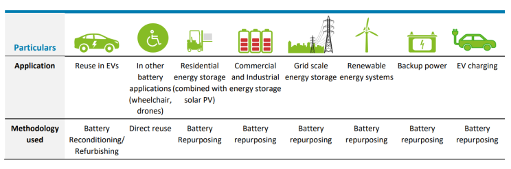
Residential Energy Storage
Residential second-life battery systems enable homeowners to:
- Store excess energy from rooftop solar panels for evening use
- Provide backup power during outages
- Optimize self-consumption and reduce grid dependence
- Participate in distributed energy resource programs
Technical Challenges and Solutions
Battery Assessment and Testing
One of the primary challenges in second-life battery deployment is comprehensive State of Health (SOH) characterization. This requires sophisticated testing methods to evaluate:
- Remaining capacity and power capability
- Internal resistance increases that affect performance
- Safety characteristics and thermal stability
- Cycle life projections for the intended application
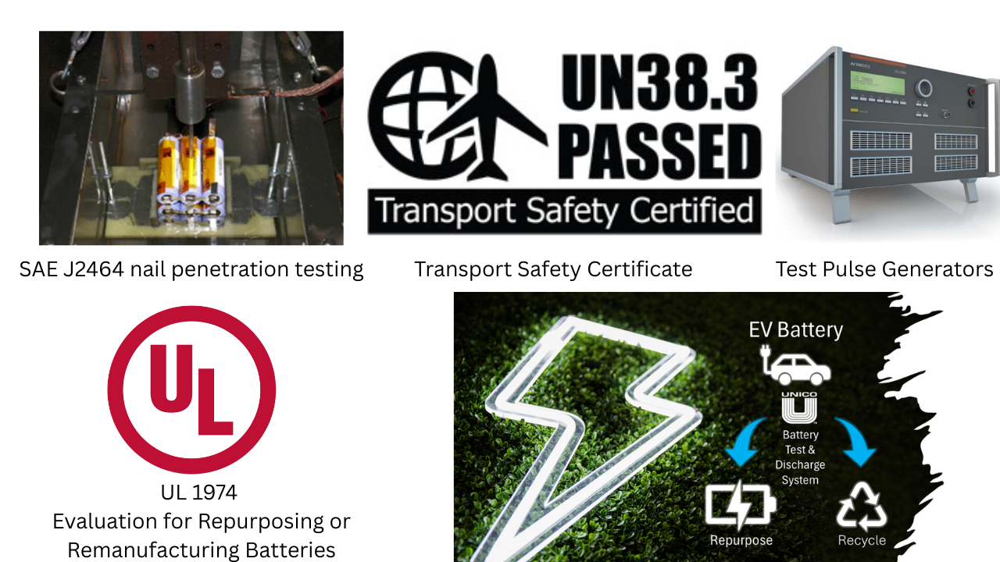
Advanced testing standards are being developed globally, including UL 1974 for repurposing facility certification and international standards like SAE J2464-2009, UN38.3, and ISO 16750-2 that can be adapted for second-life applications.
Heterogeneous Battery Management
Second-life BESS must manage batteries from different manufacturers, chemistries, and degradation states. Sparkion's SparkSwitch technology exemplifies innovative solutions, allowing systems to bypass weak cells and optimize energy extraction from diverse battery packs. AI-driven management systems use proprietary algorithms to optimize stored energy deployment across mixed battery configurations.
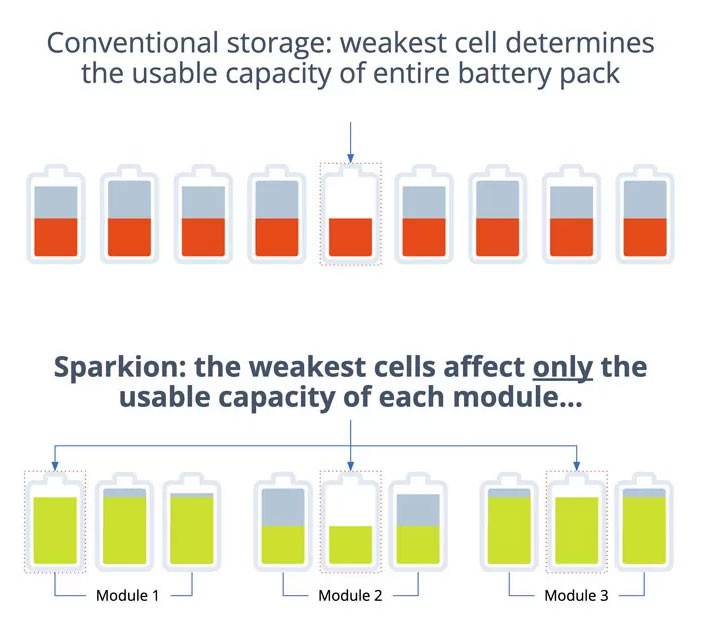
Safety Considerations
Safety remains paramount in second-life applications. The UK government commissioned comprehensive research showing that while retired batteries present specific risks—including unpredictable degradation, potential thermal runaway, and handling challenges—these can be mitigated through proper gateway testing, robust Battery Management Systems (BMS), and adherence to established safety standards.
Environmental and Sustainability Benefits
Repurposing EV batteries delivers substantial environmental advantages:
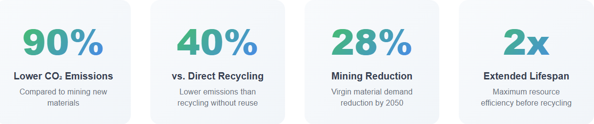
- 90% lower CO2 emissions compared to direct mining of new materials
- 40% lower emissions than direct recycling without reuse
- Reduced demand for virgin materials including lithium, cobalt, and nickel
- Extended material utilization before final recycling, maximizing resource efficiency
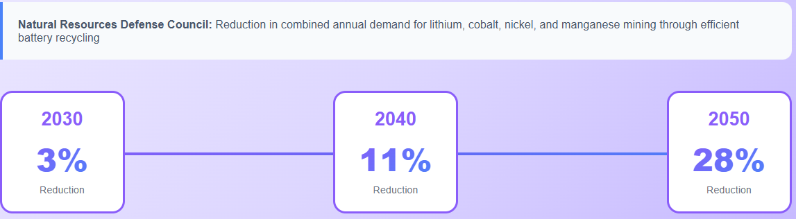
The Natural Resources Defense Council estimates that efficient recycling of end-of-life vehicle batteries could reduce combined annual demand for new lithium, cobalt, nickel, and manganese mining by 3% in 2030, 11% in 2040, and 28% in 2050.
Market Projections and Future Outlook
The availability of end-of-life EV batteries is expected to grow exponentially. Research indicates that approximately 1.2 million batteries from light- and heavy-duty BEVs and PHEVs will reach end-of-life in 2030 globally, rising to 14 million in 2040 and 50 million in 2050.
Reusing 50% of these end-of-life vehicle batteries for energy storage could provide capacity of:
- 96 GWh in 2030
- 3,000 GWh in 2040
- 12,000 GWh by 2050
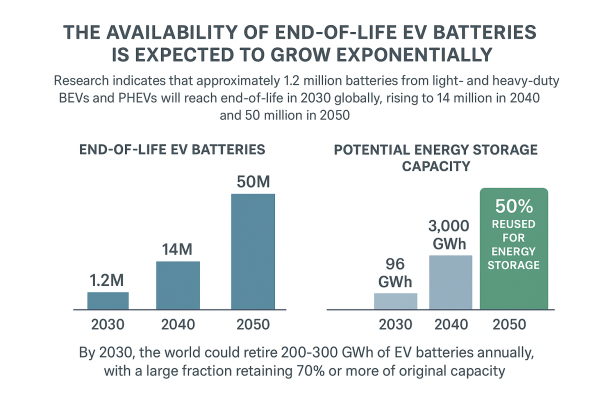
By 2030, the world could retire 200-300 GWh of EV batteries annually, with a large fraction retaining 70% or more of original capacity.
Industry Players and Innovation
The second-life battery ecosystem includes established players and innovative startups:
- Major Recycling Companies: Li-Cycle , Umicore , Ascend Elements , American Battery Technology Company , and Cirba Solutions lead in battery material recovery and circular economy solutions.
- Technology Innovators: Companies like Sparkion | A Vontier company; part of EVolve™ e-mobility portfolio provide specialized solutions for second-life battery optimization, while infinitev partners with automotive manufacturers to create circular economy solutions.
- Automotive OEMs: Major automakers are increasingly involved in second-life initiatives, recognizing both environmental benefits and potential revenue streams from their retired battery packs.
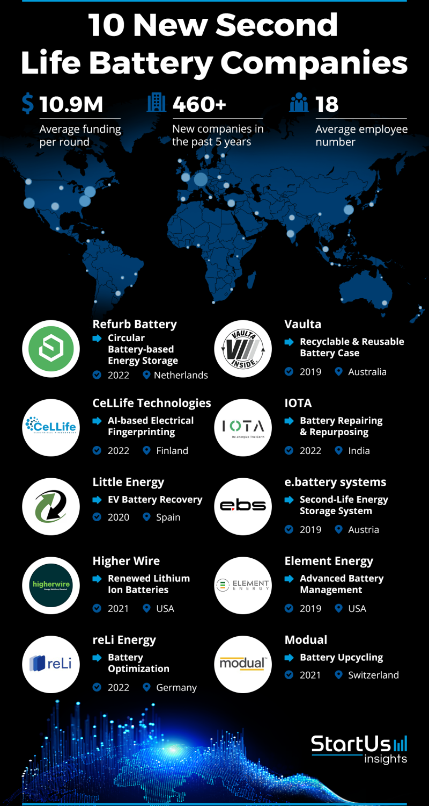
Regulatory Framework and Standards
Governments worldwide are developing supportive policies for second-life battery applications:
- European Union regulations are establishing mandatory recovery rates and recycled content targets
- Extended Producer Responsibility frameworks are making manufacturers responsible for battery end-of-life management
- Safety standards are being updated to address second-life applications specifically
- Incentive programs are being implemented to encourage domestic recycling and reuse capacity
Future Challenges and Opportunities
Competition from New Battery Technology
Second-life BESS faces increasing competition from rapidly declining first-life lithium-ion battery costs. The four-fold increase in global BESS deployments from 2021 to 2023 (from 23.1 GWh to 92.3 GWh) has driven down new battery prices, requiring second-life systems to maintain significant cost advantages.
Technical Innovation Needs
Future success depends on continued innovation in:
- Battery testing and grading technologies for rapid, accurate assessment
- Modular system designs that accommodate diverse battery types
- Predictive analytics for optimizing second-life application matching
- Safety systems that ensure reliable long-term operation
Business Model Evolution
The industry is exploring alternative business models including Battery Storage as a Service (BSaaS) and battery leasing programs to make second-life systems more attractive to customers while managing performance uncertainties.
Conclusion
Second-life EV batteries represent a transformative opportunity to address multiple challenges simultaneously: reducing electronic waste, providing cost-effective energy storage, supporting renewable energy integration, and creating new economic value streams. With the global BESS market projected to grow dramatically over the next decade and millions of EV batteries approaching retirement annually, the repurposing of these resources into stationary energy storage systems offers a practical pathway toward a more sustainable and economically efficient energy future.